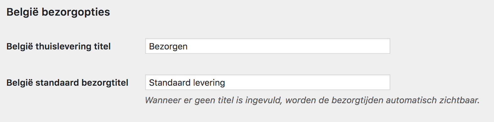
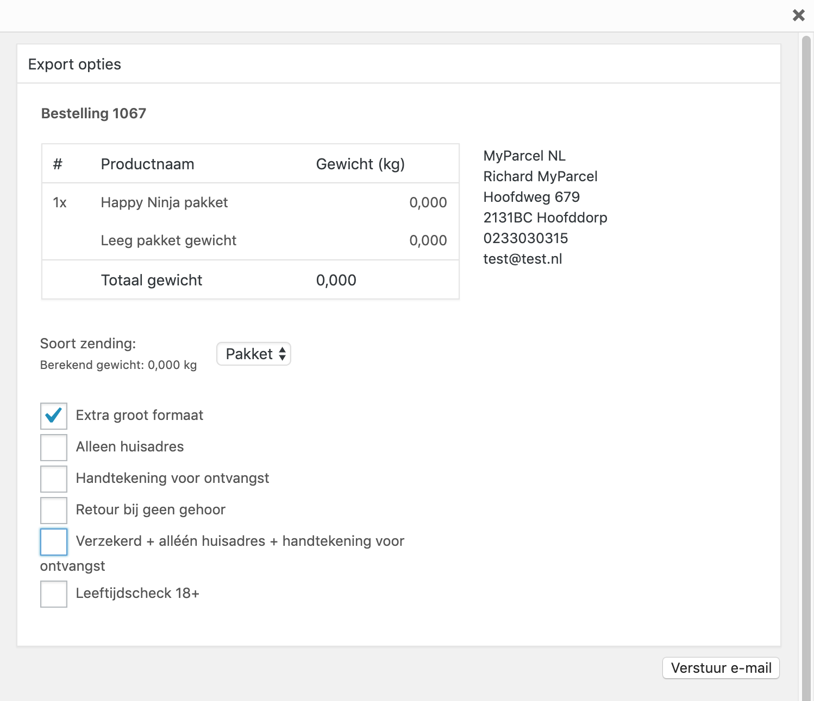

Inleiding
Deze handleiding beschrijft de functionaliteiten van de MyParcel plugin en hoe je de MyParcel plugin in jouw webwinkel kunt installeren. Wij adviseren om de plugin eerst in een testomgeving te installeren voordat je deze in jouw live webshop zet. De installatie kan op twee manieren worden uitgevoerd:
- Via de WordPress plugin directory
- Handmatig uploaden
Met deze WooCommerce plugin kun je vier soorten MyParcel zendingen aanmaken:
- Pakketten binnen Nederland (huisadres en ophaallocaties PostNL)
- Pakketten zowel binnen de EU als buiten de EU
- Brievenbuspakje
- Ongefrankeerd label
Inhoud
1 Installatie
Wij adviseren de installatie altijd eerst op een testomgeving uit te voeren en een back-up te maken van jouw webshop voor je begint.
1.1 Via de WordPress plugin directory
Om de MyParcel plugin te installeren via de WordPress plugin directory volg je de volgende stappen:
- Ga in WordPress naar het menu Plugins > Nieuwe plugin.
- Typ in MyParcel en klik op zoeken.
- Kies de plugin WooCommerce MyParcel export en klik op Nu installeren. De plugin wordt nu gedownload.
- Wanneer het downloaden voltooid is, klik je op Plugin activeren.
1.2 Handmatig uploaden
- Download de zip file van de plugin vanaf de WordPress site: http://www.wordpress.org/plugins/woocommerce-myparcel/
- Ga in WordPress naar het menu Plugins > Nieuwe plugin.
- Klik bovenin het scherm op Uploaden.
- Kies het bestand en klik op Nu Installeren.
- Wanneer het installeren voltooid is, klikt u op ‘Plugin activeren’.
1.3 Testen
Met de plugin van MyParcel worden bepaalde bezorgopties toegevoegd aan jouw checkout. Welke bezorgopties je jouw klant aan wil bieden kun je instellen in de configuratie van de MyParcel plug-in.
Wij adviseren dan ook om na het installeren van de plugin jouw bestelproces goed door te lopen of alles naar wens is. Met de checkout is het namelijk mogelijk om bijvoorbeeld uitgestelde levering in te stellen, het is dan fijn voor jou om te zien wat jouw klanten ook zullen zien.
Ook omdat niet alle checkouts in Woocommerce hetzelfde werken is het nogmaals goed om te kijken of alles naar wens staat. Staat alles op de juiste plaats en is het goed uitgelijnd? Onze tip is om hier naar te kijken voordat jouw klanten dit gebruiken.
2 Configuratie
Ga naar het menu WooCommerce → MyParcel om de MyParcel plugin te
configureren.
2.1 Algemeen
2.1.1 API instellingen
Om verbinding te kunnen maken met jouw MyParcel account is het noodzakelijk om hier jouw API-key in te vullen. Als je ingelogd bent in jouw myparcelaccount op backoffice.myparcel.nl dan kun je deze vinden in menu Instellingen → Algemeen.2.1.2 Label weergave
Geef hier aan of je het label direct wilt downloaden of wilt openen in een nieuw scherm.
2.1.3 Label formaat
Geef hier aan of je het label op een standaard (A4) of op een labelprinter (A6) wilt printen.
2.1.4 Vraag om startpositie bij printen
Met deze optie kan je verder gaan met printen, waar je de laatste keer was gebleven. Hierdoor zullen er geen stikkers overblijven op de A4.
2.1.5 Track&Trace instellingen
Stel ’Email track&trace code’ in zodat het emailadres van de klant wordt meegestuurd naar MyParcel. Het emailadres kan door MyParcel worden gebruikt om de Track&Trace mail te versturen naar de klant.
2.1.6 Verwerk zendingen direct
Wanneer je deze optie inschakelt, zullen zendingen direct worden verwerkt wanneer deze verzonden zijn naar MyParcel.
2.1.7 Orderstatus automatisering
Wijzig automatisch de order status na het succesvol exporteren van een order naar MyParcel.
Let op dat Verwerk zendingen direct is ingeschakeld wanneer u deze optie gebruikt in combinatie met de Track&trace in email optie, anders wordt de track&trace code niet opgenomen in de email naar de klant.
2.1.8 Bewaar oude zendingen
Wanneer deze optie is ingeschakeld, zullen de gegevens van de vorige zendingen (track&trace links) in de order worden bewaard wanneer je meer dan één keer exporteert.
2.1.9 Bewaar barcode in een notitie
Plaats de barcode in een notitie van een order, hierdoor is het mogelijk voor andere plugins om de barcode makkelijk te kunnen uitlezen.
2.1.10 Diagnostische hulpmiddelen
Je kunt de diagnostische hulpmiddelen inschakelen op het moment dat er problemen zijn met het exporteren van de zendingen. In dit bestand wordt de communicatie tussen WooCommerce en MyParcel beschreven.

2.2 Standaard exportinstellingen
2.2.1 Pakkettype koppelen aan verzendtype
Je kunt verzendmethoden koppelen aan een pakkettype, zodat het juiste label wordt aangemaakt in jouw MyParcel account. Met onderstaand voorbeeld lichten we dit verder toe.

In het voorbeeld is te zien dat de verzendmethode Vast tarief is gekoppeld aan het pakkettype Pakket
Daarnaast hebben we de naam van de verzendmethode Flat rate NL aangepast naar Brievenbuspakket en deze is gekoppeld aan Brievenbuspakje. Dit betekent dat orders met deze verzendmethode als brievenbuspakje doorgezet worden naar MyParcel.
Als laatste staat gratis verzending, met deze verzendmethode wordt een ongefrankeerd label aangemaakt. Je kunt dit uiteraard ook weglaten of hier een andere verzendmethoden aan koppelen.
De checkout is nu ook gekoppeld aan deze verzendmethoden. Wanneer jouw klant voor de optie Brievenbuspakket heeft gekozen zal de uitgebreide checkout niet getoond worden. Ook bij zendingen naar het buitenland wordt deze checkout dan niet getoond. De reden hiervoor is omdat de extra opties niet beschikbaar zijn in combinatie met een brievenbuspakket of een buitenlandse zending.
Wanneer er gebruik wordt gemaakt van verzendklassen, dan is het ook mogelijk om deze aan de checkout te koppelen.


Let op! Het gaat hier om de standaardinstelling. Uiteraard kan dit nog per order handmatig aangepast worden.
2.2.2 Koppel emailadres klant
Je kunt de keuze maken om wel of niet het e-mailadres vanuit jouw orders mee te sturen naar MyParcel. Wanneer je het emailadres van de klant koppelt, kan je instellen dat MyParcel jouw Track&Trace emails verstuurd naar dit adres. In jouw MyParcel backend kun je zelf deze email in of uitschakelen en opmaken in jouw eigen stijl.
2.2.3 Extra verzendopties
Geef direct aan wat jouw standaard verzendopties zijn voor jouw Nederlandse pakket zendingen. Je kunt hier kiezen voor extra groot formaat, alleen huisadres, handtekening voor ontvangst, retour bij geen gehoor en verzekerd verzenden. Jouw zendingen krijgen hiermee standaard de verzendoptie mee wanneer je deze exporteerd. De opties die je hier aangeeft, kunnen bij het exporteren altijd nog per zending aangepast worden.
2.2.4 Label omschrijving
Met deze optie kun je een beschrijving toevoegen aan de zending. Dit zal worden afgedrukt op de linkerbovenhoek van het label en kun je gebruiken om de zending in het MyParcel zendingenoverzicht op te zoeken. Gebruik [ORDER_NR] om het ordernummer te vermelden.
2.2.5 Leeg pakket gewicht
Geef hier aan wat het gewicht van een leeg pakket is, afgerond op gram.
2.3 Checkout
Via het tabblad ‘Checkout’ heb je de mogelijkheid om meer verzendopties toe te voegen in jouw checkout. Ook is het mogelijk om ervoor te kiezen de checkout niet enkel bij pakketten te tonen maar ook voor alle verzendmethoden.
2.3.1 Verwerking van zendingen
Op basis van de opties Afleverdagen, Sluitingstijd, Verwerkingstijd en Leverdagen venster worden de juiste levertijden en –dagen getoond aan jouw klanten via de checkout, gebaseerd op jouw manier van orderverwerking.
Daarnaast is het mogelijk om de checkout te verplaatsen via Bezorgopties positie, zodat hij op de gewenste positie komt te staan.

Bezorgopties positie
Zou je de checkout op een andere plek willen hebben dan is dat mogelijk via de bezorgopties positie. Je kan de MyParcel checkout op drie verschillende plekken zetten bijvoorbeeld na factuurgegevens,na verzendgegevens of na notities.
Afleverdagen
Hiermee kun je aangeven op welke dagen jij het pakket afgeeft bij een PostNL locatie. Jouw klanten krijgen hiermee de juiste beschikbare bezorgdagen aangeboden.
Sluitingstijd
Met de sluitingstijd kun je aangeven tot welk moment van de dag de orders nog verwerkt kunnen worden. Als je elke dag rond 17:00 de bestellingen naar een PostNL locatie brengt is het handig om de laatste order rond 16:00 te verwerken. Wanneer jouw klanten na dit tijdstip een bestelling plaatsen zien zij een latere levermogelijkheid. Bijvoorbeeld:
Sluitingstijd is om 16:00 en je kunt dezelfde dag de orders verwerken en op tijd inleveren. Dan zal jouw klant als eerste levermogelijkheid voor 16:00 de volgende dag zien. Wanneer jouw klant na 16:00 besteld zal het de dag erna zijn.
Verwerkingstijd
Je kunt hier instellen hoeveel dagen jij nodig hebt om een order, die vóór jouw laatste besteltijd binnenkomt, te verwerken. Als je bijvoorbeeld 1 dag invult, zal er in de weergave in de check-out altijd rekening gehouden worden met het feit dat jij de pakketten dus niet morgen geleverd worden. Bijvoorbeeld:
De bestelling wordt geplaatst op 16 september voordat jij naar het PostNL punt gaat. Je hebt echter een verwerkingstijd van 1 dag ingesteld, dus de eerste mogelijkheid voor jou om het pakket in te leveren is dan 17 september. Jouw klant krijgt dan dus pas 18 september als eerst mogelijke leverdag te zien.
Leverdagen venster
Met deze optie kun je aangeven tot hoever in de toekomst jouw klanten een leverdag kunnen kiezen. In dit geval staat het op 10 dagen, maar dit kan natuurlijk ook 2 of 5 dagen zijn. Het maximum is 14 dagen. Wanneer het leverdagenvenster op '0' wordt gezet, zullen de dagen niet meer worden getoond, waardoor de consument geen dag meer kan kiezen.
Let op: PostNL houdt geen rekening met de gekozen leverdag van jouw klant. Je dient zelf zorg te dragen voor het op de juiste dag inleveren van jouw pakket.
2.3.2 Bezorgopties
Bij de verschillende bezorgopties is het mogelijk een toeslag in te stellen die voor de desbetreffende bezorgoptie doorberekend wordt aan jouw klant via de checkout.
Het is dus een toeslag op de standaardtarieven die je al hebt ingevoerd. In onderstaand voorbeeld zie je hoe deze toeslagen in de check-out terugkomen.

Let op: de MyParcel checkout kan er op iedere website er anders uit zien. De checkout zal de style van het thema overnemen.
Bij de opties ochtendlevering, avondlevering en de standaard bezorgtitel is het mogelijk een titel mee te geven. Deze titel zal aan de voorkant van de website te zien zijn.
Zodra er geen titel is ingevuld zullen er tijden te zien zijn waartussen het pakket bezorg word.
2.3.3 België bezorgopties
Naast het feit dat het mogelijk is om jouw pakketten bij een Nederlandse PostNL punt te laten bezorgen, is het ook mogelijk om voor een Belgische PostNL punt te kiezen.
België thuislevering titel
De titel die je wilt gebruiken voor het thuis late bezorgen is aan te passen ten optichte van een Nederlandse zending.
België standaard bezorgtitel
De titel die je wilt gebruiken voor een standaard levering naar België is aan te passen ten optichte van een Nederlandse zending. Wanneer er geen titel is ingevuld, worden de bezorgtijden automatisch zichtbaar.

3 Orderoverzicht
In het orderoverzicht kun je eenvoudig zien wat voor zending de nieuwe bestelling betreft. Ook kun je makkelijk het pakkettype wijzigen indien dit gewenst is. Wanneer je op Pakket klikt verschijnt het venster eronder. Hierin is het mogelijk om verzendopties uit te schakelen of juist toe te voegen of het soort zending aan te passen.
Na het kiezen van jouw gewenste opties of het wijzigen van het Soort zending klik je op Opslaan en daarna kun je deze keuze exporteren naar MyParcel en het gewenste label aanmaken.

Je kunt op 2 manieren jouw orders doorzetten naar MyParcel en hier vervolgens een label voor uitprinten. Namelijk door een order (of meerdere orders) te selecteren en vervolgens naar Acties te gaan. Daar kun je jouw keuze maken Exporteren, Printen of Exporteren en Printen.


3.1 Retourlabel email
Vanuit het orderoverzicht kun je een retourlink naar jouw klant sturen. Jouw klant ontvangt een e-mail met een link er in om eenvoudig een retourlabel te printen. In onderstaande afbeelding kun je zien welk icoontje hiervoor gebruikt kan worden.


4 Orderdetails
Uiteraard is het ook mogelijk om zendingen vanuit de order detailpagina zendingen aan te maken. Door op een order te klikken kom je op een pagina waar meer details over deze bestelling te vinden is.

5 Zending informatie
Als je informatie over jouw zending wilt zien is het niet nodig om dit te bekijken in jouw MyParcel account. Je kunt deze informatie bekijken in jouw order overzicht in WooCommerce.
Bij elke order die wordt doorgezet naar MyParcel en waarvoor een label is aangemaakt komt een I te staan. Door hierop te klikken wordt er meer informatie getoond over de status van de zending.

6 Extra opties
Het is in Woocommerce ook mogelijk om verzendtarieven te hanteren voor producten of bepaalde productgroepen. Om hier meer over te lezen kun je het volgende PDF bestand downloaden. Hierin staat meer uitgelegd over de werking van de verzendklassen of het werken met table rates.
Klik hier voor de uitleg